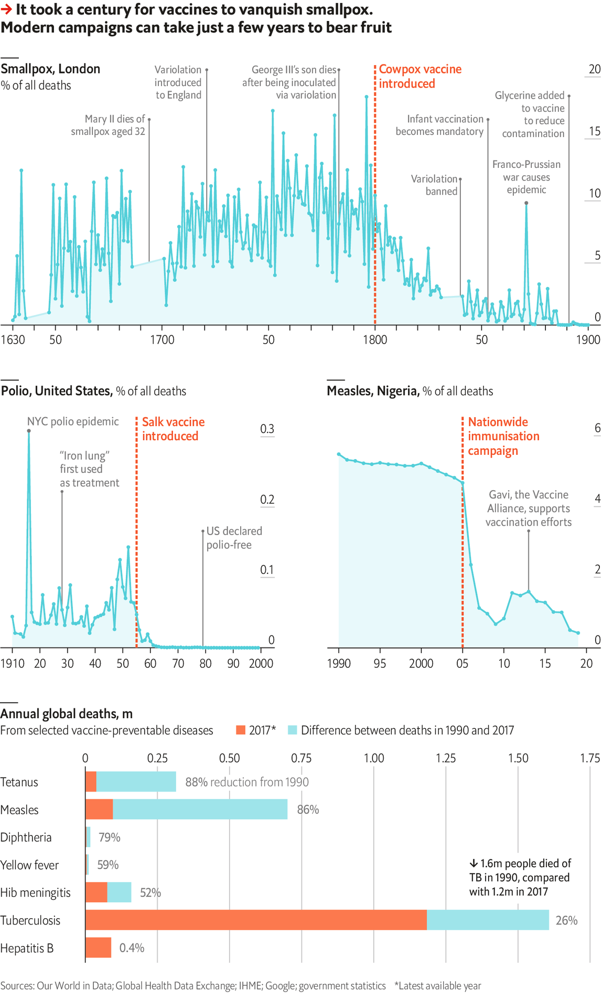

2021-02-03T18:16:59+00:00
Vaccination
接种
接種
Gift of the jab
一针立效
一針立效
Vaccination campaigns are hard
疫苗接种推行不易
疫苗接種推行不易

AS NEW VARIANTS of SARS-CoV-2 take off, it seems increasingly likely that vaccination is the only way the pandemic will be brought under control. In theory, the high efficacy shown in clinical trials should be sufficient to stop the virus cold. Yet only a few vaccines have ever brought epidemics to an abrupt halt. Even in modern times, many campaigns have fallen short of the impact covid-19 jabs will need to have for pre-pandemic lifestyles to resume.
新冠病毒变种开始流行之际，接种疫苗似乎越发可能是控制住疫情的唯一方法。理论上，疫苗在临床试验中显现出的高效力应该足以迅速遏制住病毒。然而，历史上只有少数疫苗曾令疫病的传播戛然而止。即使在现代，许多接种行动的效果也没达到新冠疫苗要恢复疫情前生活方式所需的遏制力度。
新冠病毒變種開始流行之際，接種疫苗似乎越發可能是控制住疫情的唯一方法。理論上，疫苗在臨床試驗中顯現出的高效力應該足以迅速遏制住病毒。然而，歷史上只有少數疫苗曾令疫病的傳播戛然而止。即使在現代，許多接種行動的效果也沒達到新冠疫苗要恢復疫情前生活方式所需的遏制力度。
The first efforts to make humans in the West immune to common diseases were ineffective. By the 15th century, Chinese doctors were grinding up dried smallpox scabs and blowing them into the nostrils of healthy children. In the early 1700s Lady Mary Wortley Montagu, an English aristocrat, saw women in Ottoman Istanbul conducting variolation—a process designed to induce a mild infection and then immunity, in which pus taken from smallpox blisters is applied to scratches on the skin.
西方最早寻求人类对常见疾病免疫的努力未见成效。到了15世纪，中国的医师把天花痘痂磨碎，将粉末吹入健康儿童的鼻孔。18世纪初，英国贵族玛丽·沃特利·蒙塔古夫人（Lady Mary Wortley Montagu）目睹了奥斯曼帝国的妇女采用人痘接种术——从天花水泡中提取脓水涂到皮肤的抓痕上，目的是引发轻度感染，然后获得免疫。
西方最早尋求人類對常見疾病免疫的努力未見成效。到了15世紀，中國的醫師把天花痘痂磨碎，將粉末吹入健康兒童的鼻孔。18世紀初，英國貴族瑪麗·沃特利·蒙塔古夫人（Lady Mary Wortley Montagu）目睹了奧斯曼帝國的婦女採用人痘接種術——從天花水泡中提取膿水塗到皮膚的抓痕上，目的是引發輕度感染，然後獲得免疫。
Montagu variolated both of her children, who survived. She later argued successfully for the procedure to become widespread. Yet during the next 80 years, the share of deaths in London caused by smallpox actually rose to nearly 9%, from just over 6% in 1640-1720. Variolation could cause deadly infections; among the victims were two sons of King George III.
蒙塔古给自己的两个孩子接种了人痘，他们都活了下来。之后，她普及这种方法的主张得到了响应。然而，在接下来的80年里，伦敦因天花死亡的比例实际上从1640到1720年间的略高于6%升至近9%。接种人痘可能导致致命感染，国王乔治三世的两个儿子就是受害者。
蒙塔古給自己的兩個孩子接種了人痘，他們都活了下來。之後，她普及這種方法的主張得到了響應。然而，在接下來的80年里，倫敦因天花死亡的比例實際上從1640到1720年間的略高於6%升至近9%。接種人痘可能導致致命感染，國王喬治三世的兩個兒子就是受害者。
Real progress only began when Edward Jenner, a physician who was apprenticed to a country doctor as a boy, began to wonder why dairymaids who had contracted cowpox rarely caught smallpox. In 1796 he used cowpox lesions from an infected maid to produce the first true vaccine—one that creates immunity without infection.
到了爱德华·詹纳（Edward Jenner）这里，事情才取得了实质性进展。他是一名内科医生，小时候曾给一名乡村医生当学徒。他思索为什么感染了牛痘的挤奶女工很少得天花。1796年，他利用一名受感染女工身上的牛痘病灶研发出了首个真正的疫苗——一种不用感染就能激发免疫力的疫苗。
到了愛德華·詹納（Edward Jenner）這裡，事情才取得了實質性進展。他是一名內科醫生，小時候曾給一名鄉村醫生當學徒。他思索為什麼感染了牛痘的擠奶女工很少得天花。1796年，他利用一名受感染女工身上的牛痘病灶研發出了首個真正的疫苗——一種不用感染就能激發免疫力的疫苗。
Although Jenner’s method worked, it still took decades for England to vanquish the disease. At the start, public scepticism and inconsistent quality control and distribution hampered vaccination efforts. By 1830, however, smallpox was responsible for only 2-3% of deaths in London. The disease was mostly defeated by 1890.
虽然詹纳的方法奏效了，但英国还是花了几十年才彻底战胜这种疾病。一开始，公众的怀疑、质控和分发的不连贯阻碍了接种进展。不过到了1830年，天花病例已经只占到伦敦总死亡人数的2%到3%。到1890年，这种疾病基本被消灭。
雖然詹納的方法奏效了，但英國還是花了幾十年才徹底戰勝這種疾病。一開始，公眾的懷疑、質控和分發的不連貫阻礙了接種進展。不過到了1830年，天花病例已經只佔到倫敦總死亡人數的2%到3%。到1890年，這種疾病基本被消滅。
In the mid-20th century, advances in immunology and public-sector logistics enabled vaccines to bring about faster results. In just a few years, Jonas Salk’s vaccine all but eliminated deaths in America caused by polio. There are now around 25 diseases for which vaccines are used in humans. In many cases, their impact has been recent: since 1990 annual deaths from measles and tetanus have fallen by nearly 90%.
在20世纪中期，得益于免疫学和公共部门物流的进步，疫苗开始更快地显现效力。短短几年内，乔纳斯·索尔克（Jonas Salk）的疫苗在美国几乎根除了脊髓灰质炎致死。如今人们用疫苗预防大约25种疾病。在许多案例中，它们发挥作用是比较近期的事：自1990年以来，麻疹和破伤风的年死亡数下降了近90%。
在20世紀中期，得益於免疫學和公共部門物流的進步，疫苗開始更快地顯現效力。短短几年內，喬納斯·索爾克（Jonas Salk）的疫苗在美國幾乎根除了脊髓灰質炎致死。如今人們用疫苗預防大約25種疾病。在許多案例中，它們發揮作用是比較近期的事：自1990年以來，麻疹和破傷風的年死亡數下降了近90%。
Some common diseases, however, have proven stubbornly resistant. Tuberculosis still claims 1.4m lives a year, mostly in poor countries; researchers have yet to improve upon the BCG vaccine, which is only moderately effective against TB. In other cases, gains have proven fragile. Nigeria slashed its measles rate by vaccinating nearly 60m children in 2005-06, but saw deaths from the disease creep up five years later, because inoculation did not become routine.
然而，一些常见的疾病被证明极其顽固。结核病每年仍夺去140万人的生命，大部分是在贫穷国家。卡介苗对抗结核病的效果只能算中等，仍有待研究人员改进。而在其他案例中，疫苗取得的成果是脆弱的。2005年至2006年间，尼日利亚为近6000万名儿童接种了麻疹疫苗，大幅降低了麻疹发病率，但五年后，由于接种疫苗并未成为常规，死于麻疹的人数逐步上升。
然而，一些常見的疾病被證明極其頑固。結核病每年仍奪去140萬人的生命，大部分是在貧窮國家。卡介苗對抗結核病的效果只能算中等，仍有待研究人員改進。而在其他案例中，疫苗取得的成果是脆弱的。2005年至2006年間，尼日利亞為近6000萬名兒童接種了麻疹疫苗，大幅降低了麻疹發病率，但五年後，由於接種疫苗並未成為常規，死於麻疹的人數逐步上升。
With governments around the world making vaccination against SARS-CoV-2 their top priority, it is likely that the decline in deaths caused by it in 2020-21 will be even more precipitous than that of polio in 1955-56. Yet it will take years to learn if covid-19 vaccines confer lifelong immunity, or whether constant vigilance will be required to keep the world protected. ■
鉴于世界各地的政府都把接种新冠疫苗作为首要任务，2020到2021年的新冠死亡人数的下降速度很可能比1955到1956年脊髓灰质炎的死亡数降速还要快。不过，还要过好几年才能知道新冠疫苗是否能带来终身免疫，还是需要时刻保持警惕才能保护世人。
鑒於世界各地的政府都把接種新冠疫苗作為首要任務，2020到2021年的新冠死亡人數的下降速度很可能比1955到1956年脊髓灰質炎的死亡數降速還要快。不過，還要過好幾年才能知道新冠疫苗是否能帶來終身免疫，還是需要時刻保持警惕才能保護世人。